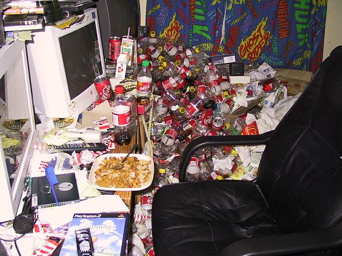
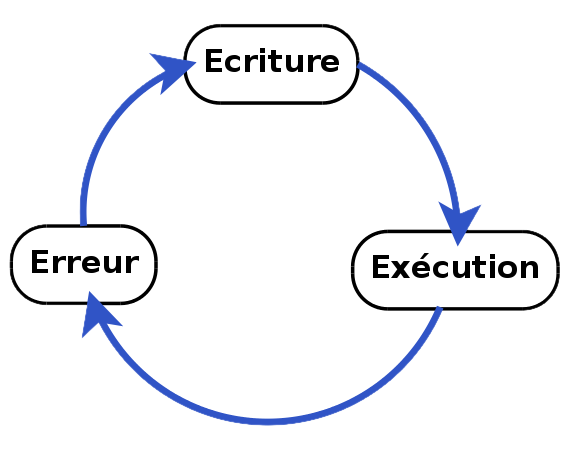
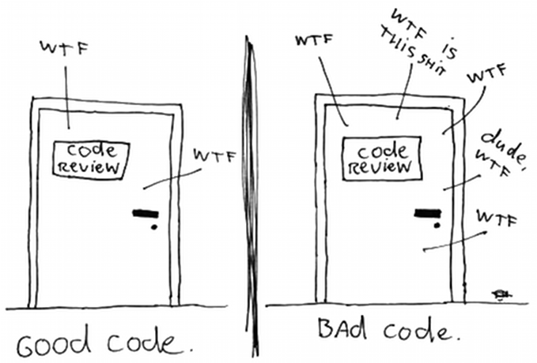
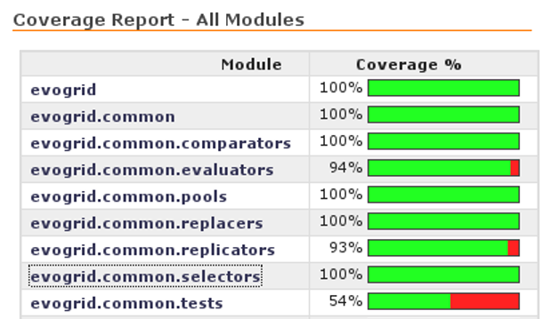
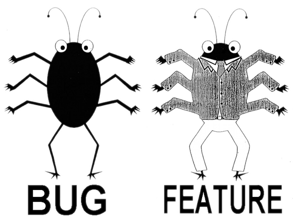
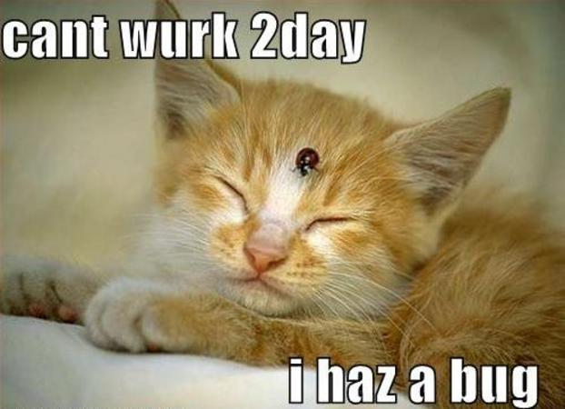

- Processus et non une fin en soi
- Objectif : augmenter la sécurité de l'application
- Sécurité : disponibilité, confidentialité et consistence


- Code écrit une fois, relu dix fois
- Fonction courte (100 lignes)
- Fichier court (1000 lignes)
- Limiter les symboles
- Simple à compiler
- Simple à comprendre
- Simple à corriger
- Simple à faire évoluer

- gcc -Wall -Wextra -Werror
- SPlint, RATS, FlawFinder
- pylint, pyflakes
- Longs rapports, faux positifs
- Tests unitaires : JUnit
- Tests fonctionnels : py.test
- Scripts post-commit
- Buildbot
def bin2long(text, endian):
"""
>>> bin2long("110", BIG_ENDIAN)
6
>>> bin2long("110", LITTLE_ENDIAN)
3
"""

- Code non testé
- Code mort
- gprof, trace2html
- true, false
- 0, 1, -1, NULL, ERR_OK
- Pénible à gérer, on préfère les oublier
- Traverse plusieurs fonctions
- Moins de code
- Type et message
- Ignorer ou transmettre

- Découvrir des bugs
- Boîte noire
- Faible coût
- Efficace
- Ligne de commande
- Variable d'environnement
- Fichier, réseau
- Quota
- Aléatoire
- Mutation
- Modèle
- Code de retour
- Temps
- Mémoire et CPU
- stdout et logs
- Boîte à outils pour écrire son fuzzer
- Nombreux projets
- Gestion des sessions
- Écrit en Python, licence GPL
- Plantage de mplayer
- Failles humaines
- Sécurité du maillon le plus faible
- Importance de l'architecture

{kind=link}